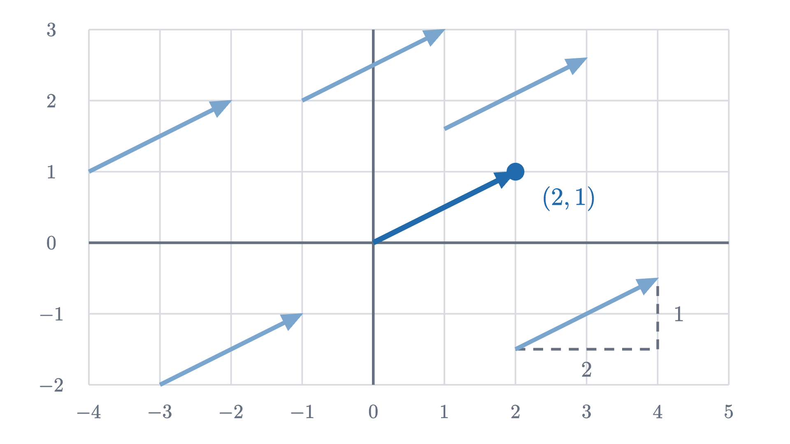
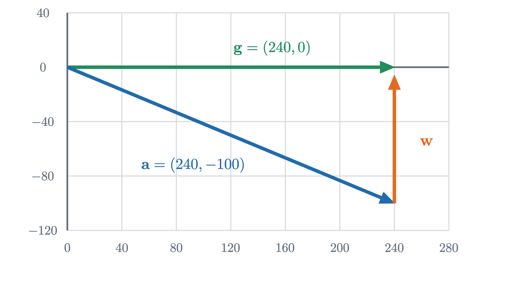

What is a vector? Arrows, lists of numbers, and adding them
A vector is a list of numbers read as a movement. Adding entry by entry matches placing arrows tip to tail, and two non-parallel arrows reach the whole plane.
AssumesThe Pythagorean theorem: a proof you can seeSolving two equations at once: where lines meet
A pilot points her plane due east and flies at 240 km/h. A steady wind blows toward the north at 100 km/h. One hour later, how far is the plane from where it took off?
The answer 240 km ignores the wind. The answer 340 km adds the two speeds, and that is wrong as well, because the two motions do not point the same way. The true distance lies between them, and to find it we need a kind of quantity that remembers its direction along with its size, together with a rule for adding two of them. That quantity is a vector. This lesson builds vectors from the pilot’s problem, then states precisely what they are and proves the facts about them that the rest of linear algebra stands on.
Pause and try
Before reading on, work out where the plane is after one hour, measured as kilometers east and kilometers north of the start, and then its straight-line distance from the start. You will need the Pythagorean theorem: in a right triangle with legs $a$ and $b$ and hypotenuse $c$, $a^2 + b^2 = c^2$.
Show answerHide answer
The plane’s own flying moves it 240 km east. During the same hour the air it flies in has moved 100 km north and carried the plane with it. So the plane is 240 km east and 100 km north of the start. Those two displacements are the legs of a right triangle, and the distance is $\sqrt{240^2 + 100^2} = \sqrt{57600 + 10000} = \sqrt{67600} = 260$ km.
Two motions, one after the other
Look at how that answer was reached. The two motions happened at the same time, yet we found the result by pretending they happened in turn: first fly 240 km east in still air, then let the wind push the plane 100 km north. The final position is the same either way, because each motion changes the position by a fixed amount no matter where the plane happens to be.
Draw each motion as an arrow whose length and direction are those of the displacement. Then “one after the other” has a picture: start the second arrow where the first one ends. This is called placing the arrows tip to tail, and the arrow from the very start to the very end is the combined motion.
The pilot’s arrows are perpendicular, which hides part of the story, so here are two arrows that are not. Call them $\mathbf{u}$ and $\mathbf{v}$: $\mathbf{u}$ moves 3 to the right and 1 up, and $\mathbf{v}$ moves 1 to the right and 2 up.
Pause and try
Start at the corner of a sheet of grid paper. Follow $\mathbf{u}$ and then $\mathbf{v}$: where are you? Now start again and follow $\mathbf{v}$ first, then $\mathbf{u}$. Do you expect to arrive at the same place, and what shape do the four arrows make?
Show answerHide answer
Following $\mathbf{u}$ puts you 3 right and 1 up; then $\mathbf{v}$ adds 1 right and 2 up, for a total of 4 right and 3 up. In the other order you are first at 1 right and 2 up, and then $\mathbf{u}$ adds 3 right and 1 up: again 4 right and 3 up. The four arrows form a parallelogram, and both routes end at the corner opposite the start.
An arrow is a list of instructions
Notice how I described $\mathbf{u}$: “3 to the right and 1 up”. That is a pair of numbers, and nothing else was needed. I never said where the arrow starts. The pilot’s wind is the same wind over the airport and over the next town; a displacement of “3 right, 1 up” is the same instruction wherever you carry it out.

So a vector in the plane is fully described by two numbers, its horizontal and vertical displacement. We write them in a column,
or in a row as $(3, 1)$ when space is short. The numbers are called the components of the vector. When the arrow is drawn starting at the origin, its tip sits at the point whose coordinates are the components, and this is how a vector can also stand for a position: the position you reach by following it from the origin.
Nothing forces the list to stop at two numbers. A displacement of a drone needs three (east, north, up), and the state of a system with a hundred measurements needs a hundred. Here is the general definition.
The symbol $\mathbb{R}$ stands for the real numbers, and $\mathbb{R}^2$ is the plane. Addition in the definition is done one component at a time, with no mention of arrows. We now have two candidates for “the sum of two vectors”, the geometric one from the last section and this arithmetic one, and we have to check that they are the same thing.
Why adding components matches tip to tail
Go back to $\mathbf{u} = (3, 1)$ and $\mathbf{v} = (1, 2)$, and break each arrow into its horizontal and vertical legs.
The picture suggests the general argument, and the argument needs one precise statement of what it means to draw a vector somewhere: the arrow for $\mathbf{v} = (v_1, v_2)$ drawn from the point $(p_1, p_2)$ ends at the point $(p_1 + v_1,\ p_2 + v_2)$. That is the meaning of “go $v_1$ across and $v_2$ up from where you are”.
The proof also shows that $\mathbf{u} + \mathbf{v} = \mathbf{v} + \mathbf{u}$, and it reduced that fact to the same fact about numbers. Most properties of vectors are proved this way: say it in components, then use ordinary arithmetic in each one.
For the pilot, flying is $(240, 0)$ and the wind is $(0, 100)$ in kilometers per hour, so the plane’s velocity over the ground is $(240, 0) + (0, 100) = (240, 100)$.
Length, scaling and subtraction
The pilot’s question was about distance, which is the length of an arrow. The legs of $\mathbf{v} = (v_1, v_2)$ are perpendicular, so by the Pythagorean theorem the length of $\mathbf{v}$ is
So $|(240, 100)| = 260$ and $|(4, 3)| = 5$. Lengths do not add when vectors do: $|\mathbf{u}| + |\mathbf{v}| = \sqrt{10} + \sqrt{5} \approx 5.40$, while $|\mathbf{u} + \mathbf{v}| = 5$. Walking two sides of a triangle is longer than walking the third.
What if the wind blew for two hours instead of one? The displacement would be $(0, 200)$: the same direction, twice as long. Multiplying a vector by a scalar $c$ multiplies every component by $c$, and the next figure shows what that does to the arrow as $c$ changes.
The scaled arrow always lies on the line through the origin and $\mathbf{w}$. Its length is
where $\sqrt{c^2} = |c|$ is the absolute value, because a length cannot be negative. A negative scalar reverses the arrow. In particular $(-1)\mathbf{w}$, written $-\mathbf{w}$, is the same displacement run backwards, and subtraction is defined as $\mathbf{u} - \mathbf{v} = \mathbf{u} + (-\mathbf{v})$, which in components is $(u_1 - v_1, u_2 - v_2)$. It answers the question “what must I add to $\mathbf{v}$ to get $\mathbf{u}$?”, since $\mathbf{v} + (\mathbf{u} - \mathbf{v}) = \mathbf{u}$.

Building arrows out of two fixed ones
Scaling and adding can be combined, and the simplest instance is hiding in the coordinates themselves. Let $\mathbf{i} = (1, 0)$ be one step to the right and $\mathbf{j} = (0, 1)$ one step up. Then
The components of a vector are the amounts of $\mathbf{i}$ and $\mathbf{j}$ needed to build it. That raises a question: is there anything special about $\mathbf{i}$ and $\mathbf{j}$? Suppose the only moves allowed were multiples of our earlier arrows $\mathbf{u} = (3, 1)$ and $\mathbf{v} = (1, 2)$. Could we still get everywhere?
Pause and try
Find numbers $a$ and $b$ with $a\,\mathbf{u} + b\,\mathbf{v} = (2, -1)$. Then do the same for the target $(-1, 3)$. Guessing is allowed.
Show answerHide answer
A negative amount is needed: $1\,\mathbf{u} + (-1)\mathbf{v} = (3, 1) - (1, 2) = (2, -1)$, so $a = 1$, $b = -1$. For the second target, $(-1)\mathbf{u} + 2\,\mathbf{v} = (-3, -1) + (2, 4) = (-1, 3)$, so $a = -1$, $b = 2$.
Guessing works for friendly targets. For an arbitrary one we need a method. Asking for $a\,\mathbf{u} + b\,\mathbf{v} = (w_1, w_2)$ is asking for
This is a system of two linear equations in the unknowns $a$ and $b$, and it can be solved by elimination: combine the equations so that one unknown cancels.
The same elimination with letters in place of 7 and 0 gives $5a = 2w_1 - w_2$ and $5b = 3w_2 - w_1$. Whatever the target, there is a solution, and only one. Before stating this in general we need names.
In the animation, the span is the set of points the green dot can reach, and “basis” says that it can reach every point, by one setting of the two dials only. The pair $\mathbf{i}, \mathbf{j}$ is a basis, called the standard basis, because $(x, y) = x\,\mathbf{i} + y\,\mathbf{j}$ and no other amounts will do. We have just seen evidence that $\mathbf{u}, \mathbf{v}$ is another.
When two arrows are not enough
Not every pair works. Take $\mathbf{u} = (3, 1)$ again, with $\mathbf{p} = (1.5, 0.5)$ as its partner. Since $\mathbf{p} = \frac12 \mathbf{u}$, every combination is $a\,\mathbf{u} + b\,\mathbf{p} = (a + \frac{b}{2})\mathbf{u}$, a multiple of $\mathbf{u}$. The dot can only run back and forth along one line, and a target such as $(-1, 3)$, which is off that line, is unreachable. Two vectors are called parallel when one of them is a scalar multiple of the other. (Under this definition the zero vector is parallel to everything, since $\mathbf{0} = 0\,\mathbf{u}$.)
The readout in that figure tracks the quantity that appeared as the 5 in “$5a = 14$”. For $\mathbf{u} = (3, 1)$ and $\mathbf{v} = (1, 2)$ it is $3 \cdot 2 - 1 \cdot 1 = 5$, and for the parallel pair it is $3 \cdot 0.5 - 1 \cdot 1.5 = 0$. The theorem says this one number decides everything.
Read the theorem against the two animations. In the first, $D = 5$, the slanted grid covers the plane, and each target has one address $(a, b)$. In the second, $D$ shrinks to 0 as the grid closes up. The formulas for $a$ and $b$ have $D$ in the denominator, so they report the collapse in advance.
What carries over to more dimensions
Everything defined by components works in $\mathbb{R}^n$ unchanged: addition, scaling, subtraction, and length, which is $\sqrt{v_1^2 + \dots + v_n^2}$. Linear combinations and span make sense for any number of vectors. What changes is the count needed to reach everything. In $\mathbb{R}^3$, two non-parallel vectors span only a plane through the origin, and a basis needs three vectors (Problem 8 looks at this). The number $D$ returns later in this series under the name determinant, where it measures the area of the parallelogram we drew in the second figure.
Looking back, the hard step was the first one: agreeing that a pair of numbers read as “this far across, this far up” deserves to be treated as a single object. Once it is, adding arrows becomes adding numbers, and a geometric question (can I reach that point?) becomes two linear equations. The next lesson asks what happens when we move the basis arrows themselves and let every other vector follow.
Check yourself
Which of these pairs is a basis of $\mathbb{R}^2$?
Problems
The first three repeat the lesson’s moves, the next three combine them, and the last two go beyond the plane or ask for a proof.
Problem 1
Let $\mathbf{u} = (2, -1)$ and $\mathbf{v} = (-3, 4)$. Compute $\mathbf{u} + \mathbf{v}$, $3\mathbf{u}$, $\mathbf{u} - 2\mathbf{v}$ and $|\mathbf{u} + \mathbf{v}|$.
Show solutionHide solution
$\mathbf{u} + \mathbf{v} = (2 - 3,\ -1 + 4) = (-1, 3)$. $3\mathbf{u} = (6, -3)$. $2\mathbf{v} = (-6, 8)$, so $\mathbf{u} - 2\mathbf{v} = (2 + 6,\ -1 - 8) = (8, -9)$. Finally $|\mathbf{u} + \mathbf{v}| = \sqrt{(-1)^2 + 3^2} = \sqrt{10} \approx 3.16$.
Problem 2
A boat points straight across a river and moves at 4 m/s through the water. The current flows at 3 m/s along the river. The river is 100 m wide. Find the boat’s speed over the ground, the time it takes to cross, and how far downstream it lands.
Show solutionHide solution
Put the first axis along the river and the second across it. The boat’s velocity through the water is $(0, 4)$ and the current is $(3, 0)$, so its velocity over the ground is $(3, 4)$ m/s, with speed $\sqrt{9 + 16} = 5$ m/s. Only the second component carries it across: $100 / 4 = 25$ seconds. In that time the first component carries it $3 \times 25 = 75$ m downstream. Check: the displacement is $25\,(3, 4) = (75, 100)$, of length $125 = 5 \times 25$ meters.
Problem 3
The point $A$ has coordinates $(1, 2)$ and the point $B$ has coordinates $(4, 6)$. Find the vector that goes from $A$ to $B$, its length, and the coordinates of the point two fifths of the way from $A$ to $B$.
Show solutionHide solution
The vector from $A$ to $B$ is what must be added to $A$’s position to get $B$’s: $(4 - 1,\ 6 - 2) = (3, 4)$, of length $\sqrt{9 + 16} = 5$. Two fifths of the way along is $A$ plus $\frac25$ of that vector: $(1, 2) + \frac25 (3, 4) = (1 + 1.2,\ 2 + 1.6) = (2.2, 3.6)$. Its distance from $A$ is $\frac25 \cdot 5 = 2$, as it should be.
Problem 4
Write $(1, 8)$ as a linear combination of $\mathbf{u} = (3, 1)$ and $\mathbf{v} = (1, 2)$, first by elimination and then with the formulas of the theorem.
Show solutionHide solution
We need $3a + b = 1$ and $a + 2b = 8$. Doubling the first and subtracting the second gives $5a = 2 - 8 = -6$, so $a = -\frac65$. Then $b = 1 - 3a = 1 + \frac{18}{5} = \frac{23}{5}$. With the formulas, $D = 5$, $a = \frac{w_1 v_2 - w_2 v_1}{D} = \frac{1 \cdot 2 - 8 \cdot 1}{5} = -\frac65$ and $b = \frac{u_1 w_2 - u_2 w_1}{D} = \frac{3 \cdot 8 - 1 \cdot 1}{5} = \frac{23}{5}$. Check: $-\frac65 (3, 1) + \frac{23}{5}(1, 2) = \left(\frac{-18 + 23}{5},\ \frac{-6 + 46}{5}\right) = (1, 8)$.
Problem 5
For which values of the number $k$ do the vectors $(k, 2)$ and $(8, k)$ fail to be a basis of $\mathbb{R}^2$? For each such $k$, write one vector as a multiple of the other.
Show solutionHide solution
$D = k \cdot k - 2 \cdot 8 = k^2 - 16$, which is zero exactly when $k = 4$ or $k = -4$. For $k = 4$ the vectors are $(4, 2)$ and $(8, 4) = 2\,(4, 2)$. For $k = -4$ they are $(-4, 2)$ and $(8, -4) = -2\,(-4, 2)$. For every other $k$ the pair is a basis.
Problem 6
A parallelogram has one corner at the origin and sides $\mathbf{u}$ and $\mathbf{v}$ leaving that corner, where $\mathbf{u}, \mathbf{v}$ are any vectors in $\mathbb{R}^2$. Use vectors to prove that its two diagonals cross at the midpoint of each.
Show solutionHide solution
The corners are at $\mathbf{0}$, $\mathbf{u}$, $\mathbf{u} + \mathbf{v}$ and $\mathbf{v}$. One diagonal runs from $\mathbf{0}$ to $\mathbf{u} + \mathbf{v}$; its midpoint is halfway along, at $\frac12(\mathbf{u} + \mathbf{v})$. The other runs from $\mathbf{u}$ to $\mathbf{v}$. The vector from $\mathbf{u}$ to $\mathbf{v}$ is $\mathbf{v} - \mathbf{u}$, so its midpoint is $\mathbf{u} + \frac12(\mathbf{v} - \mathbf{u}) = \frac12 \mathbf{u} + \frac12 \mathbf{v}$. The two midpoints are the same point, so each diagonal passes through the midpoint of the other. For $\mathbf{u} = (3, 1)$, $\mathbf{v} = (1, 2)$ that point is $(2, 1.5)$.
Problem 7
The three vectors $\mathbf{i} = (1, 0)$, $\mathbf{j} = (0, 1)$ and $\mathbf{s} = (1, 1)$ certainly reach every point of the plane. Find two different ways to write $(2, 3)$ as $a\,\mathbf{i} + b\,\mathbf{j} + c\,\mathbf{s}$, and then explain why three vectors in $\mathbb{R}^2$ can never give every vector exactly one address $(a, b, c)$.
Show solutionHide solution
$(2, 3) = 2\,\mathbf{i} + 3\,\mathbf{j} + 0\,\mathbf{s}$, and also $(2, 3) = 0\,\mathbf{i} + 1\,\mathbf{j} + 2\,\mathbf{s}$, since $(0, 1) + (2, 2) = (2, 3)$. In general, take any three vectors $\mathbf{x}, \mathbf{y}, \mathbf{z}$ in $\mathbb{R}^2$. If two of them, say $\mathbf{x}$ and $\mathbf{y}$, are not parallel, they are a basis, so $\mathbf{z} = a\,\mathbf{x} + b\,\mathbf{y}$ for some $a, b$; then $\mathbf{z}$ has the two addresses $(a, b, 0)$ and $(0, 0, 1)$. If instead every two of them are parallel, then either all three are zero, or one is nonzero and the other two are multiples of it; in both cases the span is at most a line, so some vectors have no address at all. Either way uniqueness or existence fails.
Problem 8
In $\mathbb{R}^3$, let $\mathbf{u} = (1, 0, 1)$ and $\mathbf{v} = (0, 1, 1)$. (a) Is $(1, 2, 3)$ a linear combination of $\mathbf{u}$ and $\mathbf{v}$? (b) Is $(1, 2, 4)$? (c) Describe the span of $\mathbf{u}$ and $\mathbf{v}$ by an equation, and conclude that two vectors cannot be enough to span $\mathbb{R}^3$ in this case.
Show solutionHide solution
A combination is $a\,\mathbf{u} + b\,\mathbf{v} = (a, b, a + b)$. (a) Matching the first two components forces $a = 1$, $b = 2$, and then the third component is $a + b = 3$, which matches. So $(1, 2, 3) = \mathbf{u} + 2\mathbf{v}$. (b) Again $a = 1$ and $b = 2$ are forced, but the third component would be 3, not 4. So $(1, 2, 4)$ is not a combination. (c) The span is the set of vectors $(x, y, z)$ with $z = x + y$: every combination $(a, b, a + b)$ satisfies it, and any vector satisfying it is $x\,\mathbf{u} + y\,\mathbf{v}$. That is a plane through the origin, and it misses $(1, 2, 4)$ along with every other vector whose third component is not the sum of the first two.